アセットのインポートとエクスポート
⭐1.機能概要
この機能を使用すると、作成した特定のコンテンツをデータとして書き出すことができます。これにより、自分で再利用するのはもちろんのこと、他のユーザーと共有することが可能になります。
⭐2.エクスポート方法1 - ステージ上で選択
🌸1.開き方
(1) 右クリックメニュー
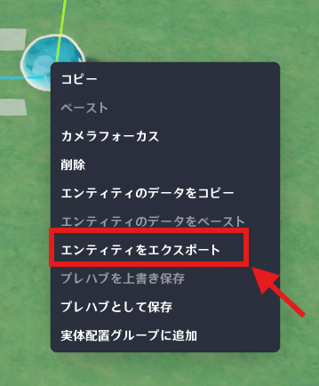
以下の場所から実行できます。
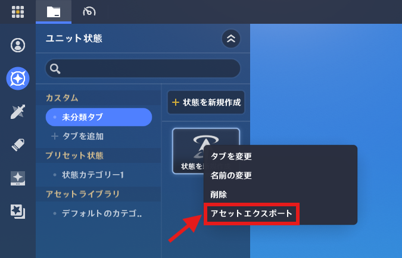
以下の場所から実行できます。
🌸2.機能の動作
選択したコンテンツからアーカイブファイル(.gia)を生成します。
🌸3.エクスポート時に含まれる内容
🌸4.操作手順
⭐3.エクスポート方法1 - ステージ上で複数選択
🌸1.開き方
利用可能な場所
🌸2.機能の動作
複数選択されたアセットをまとめて1つの.giaファイルとして出力します。
外部アセットを読み込むと、「Import and Transfer（インポートと転送）」画面では1つの統合パッケージとして表示されます。
アセット転送後は、アセットバー内の「アセットをインポート」に統合アセットとして表示され、そのまま利用できます。
🌸3.操作手順
単一選択でエクスポートした時と同じです。
🌸4.エクスポート時に含まれる内容
⭐4.エクスポート方法3 - UIでの単一/複数選択
🌸1.開き方
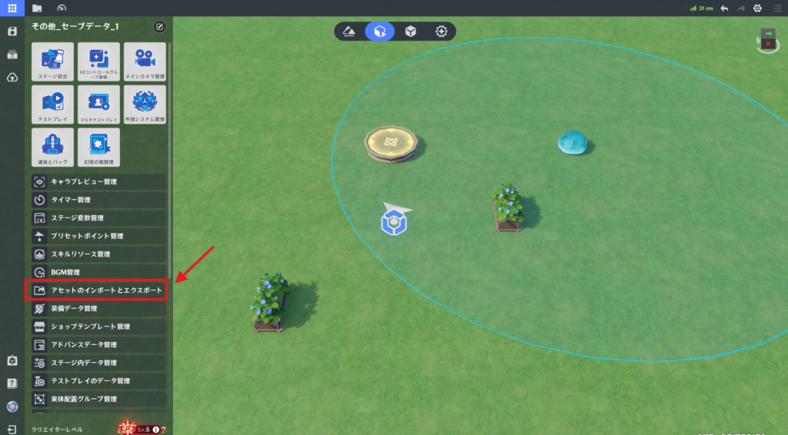
左上のシステムメニューを開き、「アセットのインポートとエクスポート」をクリックします。
🌸2.メイン画面
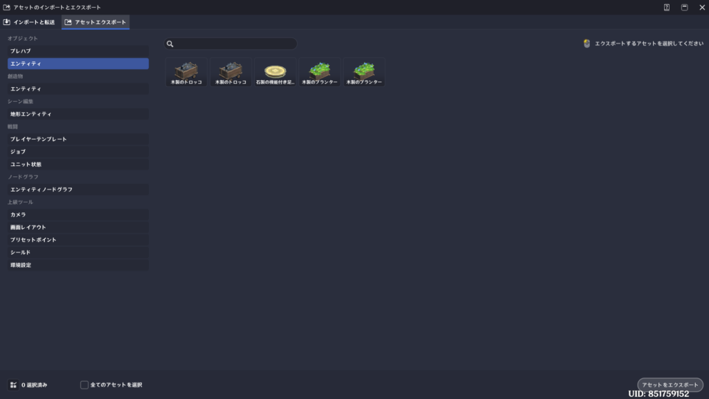
🌸3.機能の動作
この機能では複数アセットを素早く選択してエクスポートできます。
個別エクスポート対応アセットであれば、どの種類でも選択可能です。
複数アセットを選択した場合は、1つの.giaファイルとしてまとめられ、その後も統合アセットとして利用できます。
🌸4.操作手順
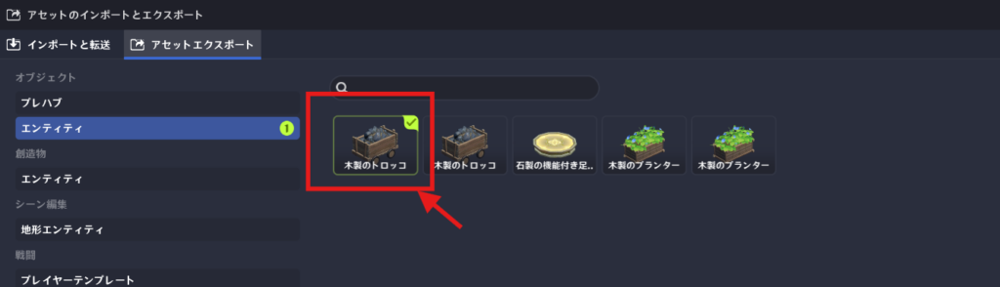
エクスポートしたいアセットをクリックして選択します。
再度クリックすることで選択解除することができます。
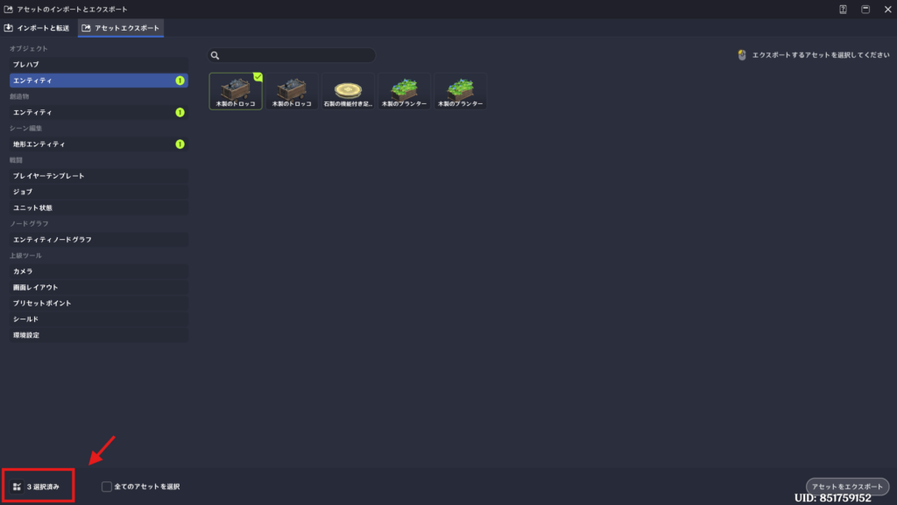
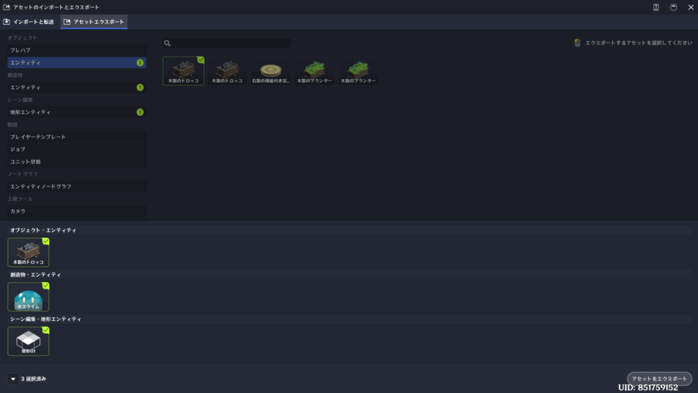
左下のアイコンをクリックすることで、選択中のエンティティを確認することができます。
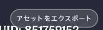
エクスポートする対象がすべて選択できたら、右下のアセットをエクスポートをクリックします。
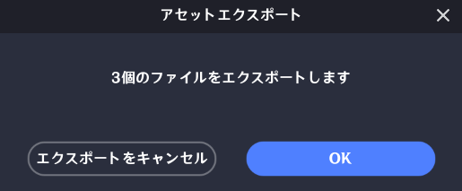
OKボタンをクリックします。
その後は、エクスポート先のフォルダを選択し、ファイル名を入力して保存してください。
⭐5.ローカルアセットのインポート/読込
🌸1.開き方
左上のシステムメニューを開き、「アセットのインポートとエクスポート」をクリックします。
🌸2.機能の動作
指定したローカルフォルダ内の保存ファイルを読み込み、星々の幻境のアセットライブラリで利用できるようにします。
ローカルアセットをインポートするたびに、星々の幻境のアセットライブラリ内の内容はすべて削除され、新しく読み込んだ内容に置き換えられます。
🌸3.自動インポート
アプリ起動後、星々の幻境を初めて開いたとき（アプリを閉じるまで有効）、ローカルファイルが自動的に読み込まれます。
🌸4.操作手順
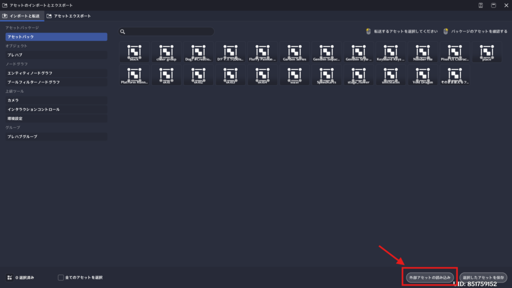
右下の「外部アセットの読み込み」をクリックします。
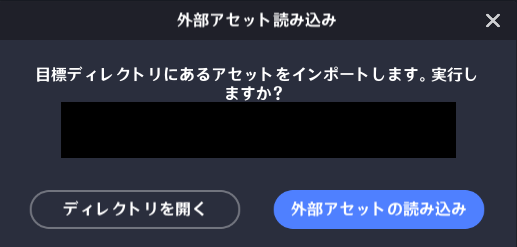
確認されるので、「外部アセットの読み込み」をクリックします。
※所定のフォルダにファイルを置いていない場合は、ディレクトリを開くからフォルダを開き、そこにインポートするファイルを格納してください。
読み込みに成功するとインポートしたいファイルが画面上に表示されます。
🌸5.アセット内容の確認
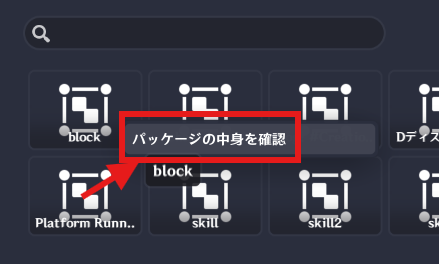
アセットを右クリックすると、パッケージの中身を確認が表示されます。
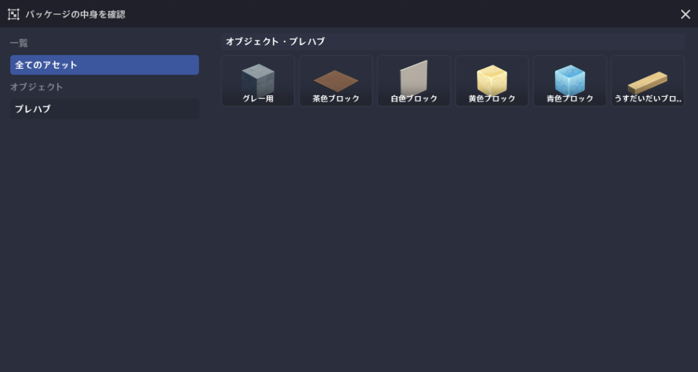
クリックすると中身を確認することができます。
⭐6.アセットの使用方法
🌸1.開き方
アセットバーのアセットライブラリ
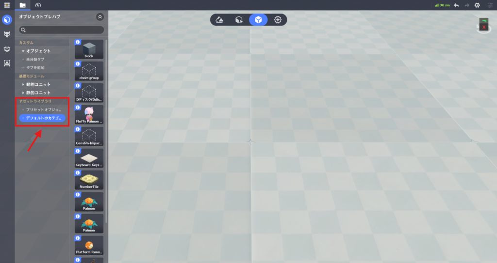
ノードグラフ外部アセット、ノード外部アセット
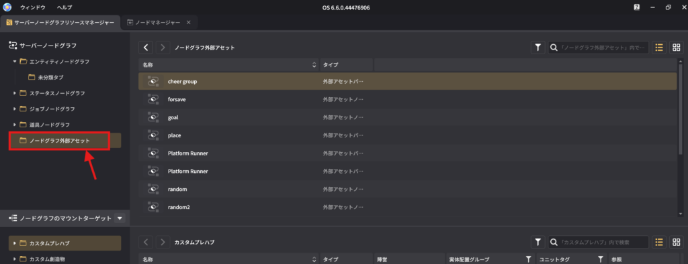
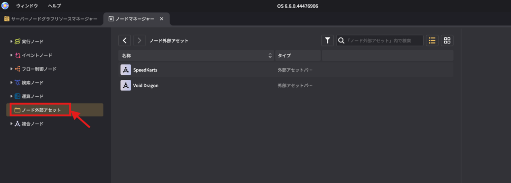
🌸2.機能概要
🌸3.使用時に一緒に追加されるもの
アセットを使用すると、関連するノードグラフ、プレハブも同時に追加されます。
追加先はデフォルトタブ または 「アセットをインポート」タブです。
🌸4.操作手順
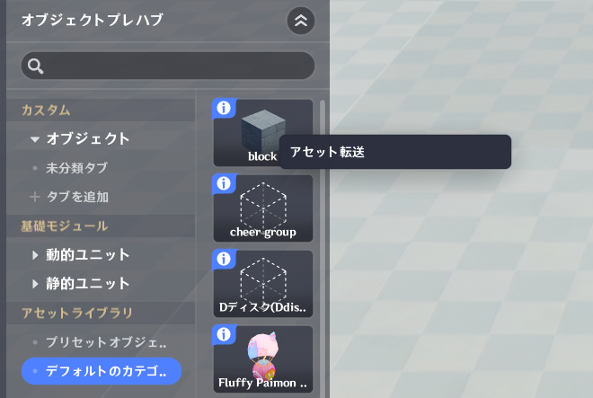
アセット欄で左クリックをするか、右クリックメニューから「アセット転送」をクリックします。
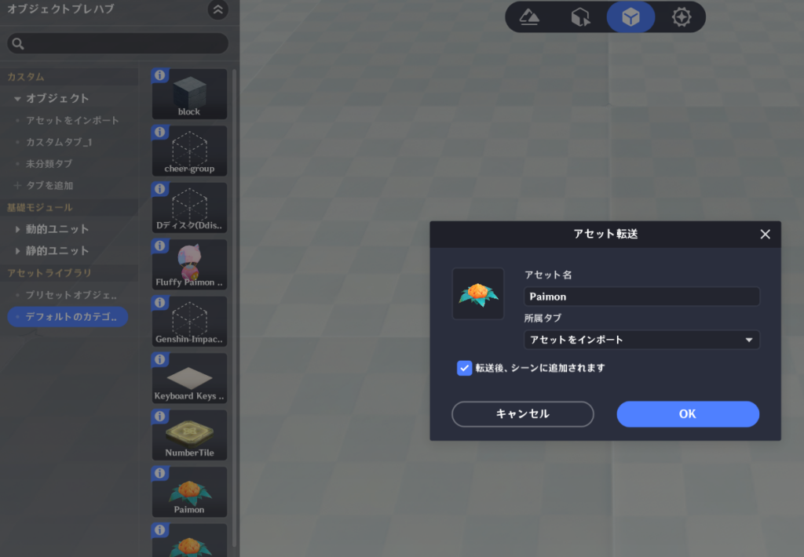
タブ選択のポップアップが表示されます。
所属タブを選択してOKをクリックしましょう。
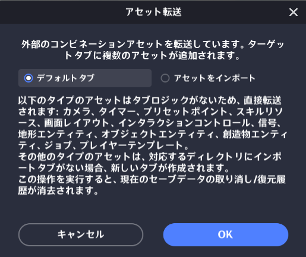
アセットが複合の場合は、別のタブ選択の確認ポップアップが表示されます。
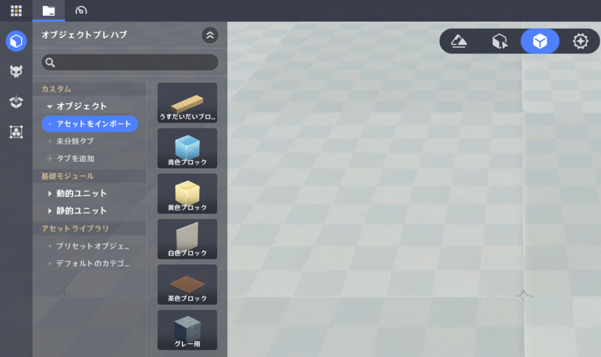
インポートに成功すると、アセットが展開され使用できるようになります。
⭐7.統合アセットの使用
🌸1.開き方
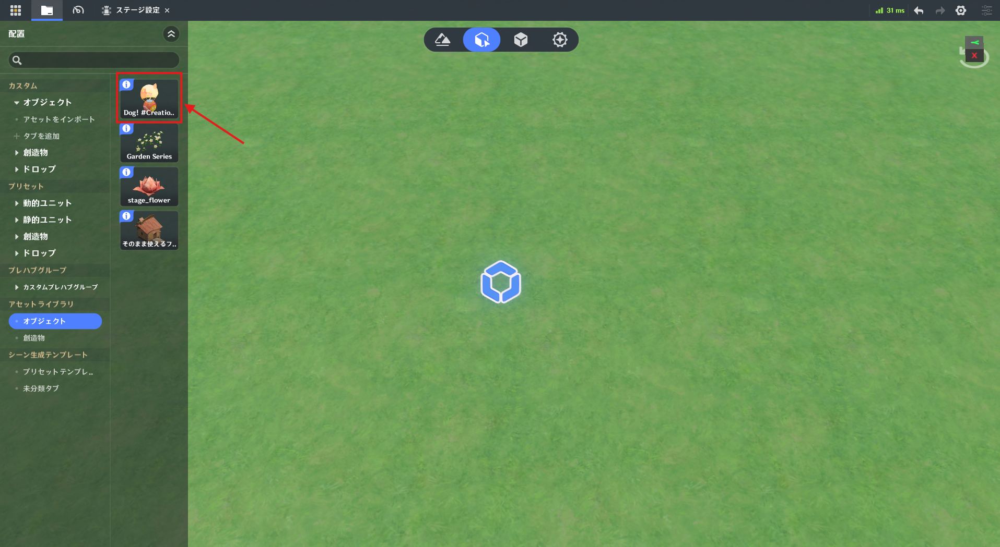
統合アセットに含まれる全種類のアセットが、それぞれのアセットバー内に表示されます。
🌸2.機能概要
統合アセットを使用すると、その中に含まれているプレハブ、エンティティ、ノードグラフなどすべてのアセットが一括で追加されます。
🌸3.操作手順
統合アセット使用時には、デフォルトタブ、アセットをインポートタブのどちらに追加するか選択できます。
※アセットをインポートタブが存在しない場合は、自動で作成されます。
⭐8.参照関係の復元
🌸1.機能概要
「3.エクスポート方法2 - ステージ上で複数選択」 または 「4.エクスポート方法3 - UIでの単一/複数選択」 で統合アセットを書き出した場合、アセット同士の参照関係も同時に記録されます。
統合アセットを読み込む際には、GUIDを置き換える仕組みによって参照関係が維持されます。
つまり、同じ統合アセットパッケージ内でエクスポートしたものは、インポート後も相互参照が壊れず、エクスポート前と同じ関係を保ったまま利用できるという仕組みです。
🌸2.重要事項
参照関係が正しく保持されるよう、参照を含むアセットは使用前にまとめて1つのアセットとしてエクスポートしてください。